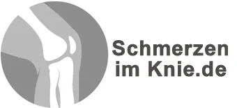
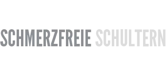

Das Programm gegen Knieschmerzen
Produktprofil · Marktplatz-Daten 2026-10-14 · Verkaufsseiten-Recherche 2026-10-14 · Kategorien: Health & Fitness
- Das Programm gegen Knieschmerzen ist ein/e Download in Health & Fitness, vertrieben über den Digistore24-Marktplatz von Anbieter bodyLIFE, gelistet seit 2018-10-17.
- Listenpreis $55.47 (single payment) — Checkout, Auslieferung und Rückerstattungen laufen über Digistore24 selbst, nicht über den Anbieter.
- Käuferschutz: keine standardisierte Garantie-Formulierung gefunden — Rückerstattungsbedingungen vor der Zahlung auf der offiziellen Seite prüfen.
Interesse an Das Programm gegen Knieschmerzen? Aktueller Preis, Boni und Garantiebedingungen finden Sie auf der offiziellen Seite des Anbieters:
Offizielle Verkaufsseite ansehen
Affiliate-Link (Werbung) — wir verdienen ggf. eine Provision, ohne Mehrkosten für Sie.

Marktplatz-Daten
| Produkttyp | Download |
|---|---|
| Preis | $55.47 (Single payment) |
| Garantie/Rückgabe | Laut Verkaufsseite des Anbieters — vor dem Kauf auf der offiziellen Seite prüfen |
| Anbieter | bodyLIFE (gelistet seit 2018-10-17) |
Marktplatz-Beschreibung des Anbieters
Endlich Schluss mit Knieschmerzen Das digitale Onlineprogramm von und mit Janek Klingmann Einmalig 59 Euro! Die Übungen sind so konzipiert, dass diese ganz bequem von zuhause aus durchzuführen sind: einfach aber effektiv! - Einmalige Zahlung - lebenslange Nutzung! Keine Mitgliedschaft - Unbegrenzter Zugriff auf alle Videos - Individuelle Übungsprogramme - Trainieren Sie wann & wo Sie wollen, auf allen Endgeräten - Garantiertes 14-tägiges Kündigungsrecht nach Kauf Über 50 Videos und vier verschiedene Trainingspläne begleiten Sie unterstützend auf Ihrem Weg zurück zu einem schmerzfreien Knie. Janek Klingmann ist Sportwissenschaftler, Studioleiter bei Consports, einem Studio mit dem Schwerpunkt auf medizinischer Trainingstheraphie, zertifizierter Functional- & Athletiktrainer, Coach im FT-Club München und Gründer von My Final. Über 25.000 begeisterte Fans folgen ihm über Social Media. Als betroffener Leistungssportler, Sportwissenschaftler und Trainer konnte sich Janek selbst über Jahre hinweg ein Bild machen, wie man Spitzensportler und Athleten therapiert. Diese Erfahrungen lässt er in sein Knieprogramm einfließen und entwickelt dieses konsequent weiter. Jederzeit und überall anwendbar! Das Drei-Säulen-Programm für zuhause. Die klare Kampfansage an das Läuferknie & andere Beschwerden: Nirgendwo werden so viele künstliche Kniegelenke eingesetzt wie in Deutschland! Auch Gelenkspiegelungen gehören erstaunlicherweise zu den häufigsten Eingriffen bei Schmerzen im Knie. Das unglaubliche dabei ist, dass die meisten dieser Operationen absolut unnötig sind! Das belegt eine umfangreiche Studie der Bertelsmann-Stiftung. In vielen Fällen reichen oft gezielte Übungen aus, um die Kniebeschwerden wieder in den Griff zu bekommen. Das Konzept des Online-Trainings-Systems für die optimale Kniegesundheit beinhaltet ein innovatives Trainingssystem basierend auf den drei Säulen Beweglichkeit, Stabilität und Kraft. Dabei richtet sich das Training an alle Menschen Egal ob mit überhöhten muskulär-faszialen Spannungen, mit einer Entzündung im Knie, postoperativ nach abgeschlossener Rehabilitation beim Physiotherapeuten und allgemeinen Schmerzen im Kniegelenk durch Asymmetrien und Dysbalancen, sowie an gesunde und schmerzfreie Sportler, die präventiv ihre Kniegesundheit sichern möchten. Durch die verschiedenen Steigerungsmöglichkeiten wird jeder Patient/ Sportler an seinem aktuellen Stand abgeholt und verzeichnet anschließend regelmäßige Fortschritte.
Von der Verkaufsseite des Anbieters
Seitentitel: Knieschmerzen: Die Hilfe zur Selbsthilfe | Effektive Übungen für zuhause
Meta-Beschreibung: Knieschmerzen: Detaillierte Übungen die wirklich gegen die Beschwerden helfen | Mobilität✓ Beweglichkeit✓ Stabilität✓ Kraft✓ | Drei Säulen - ein Programm!
Hauptüberschrift
Kennst du das?
Die gute Nachricht
Und so funktioniert das Programm
Abschnitts-Überschriften
- Endlich Schluss mit Knieschmerzen
- Jederzeit und überall anwendbar
- Egal ob Vielsitzer, Sportler oder Athlet
- Wieder schmerzfrei durch den Alltag
- Beschwerden im Knie: Wusstest du
- Welchen Therapeuten soll ich bei Knieschmerzen aufsuchen?
Einstiegstext
Einfache aber effektive Übungen gegen deine Beschwerden, egal ob innen oder außen
Die klare Kampfansage an das Läuferknie, Iliotibialband-Syndrom andere Beschwerden
dass nirgendwo so viele künstliche Kniegelenke eingesetzt werden wie in Deutschland? Auch Gelenkspiegelungen gehören erstaunlicherweise zu den häufigsten Eingriffen bei Schmerzen im Knie. Das unglaubliche dabei ist, dass die meisten dieser Operationen absolut unnötig sind! Das belegt eine umfangreiche Studie der Bertelsmann-Stiftung. In vielen Fällen reichen oft gezielte Übungen aus, um die Kniebeschwerden wieder in den Griff zu bekommen.
Die Übungen sind so konzipiert, dass diese ganz bequem von zuhause aus durchzuführen sind: einfach aber effektiv!
Fragen, die die Verkaufsseite beantwortet
- Wie lange kann ich die Übungen ansehen?
- Wo sehe ich die Lektionen und wie finde ich diese?
- Ich bin länger nicht Zuhause. Verpasse ich dann etwas?
- Gibt es noch weitere Kosten?
- Ist der Kurs auch für ältere Personen geeignet?
- Was ist, wenn mir der Kurs nicht gefällt oder mir nicht hilft?
- Benötige ich spezielle Geräte für die Übungen?
Recherche-Methode: rohes HTML · 1526 Wörter · Qualität: rich · recherchiert am 2026-10-14. Vollständige Recherche-Datei (MD) ↗
Wie Produkte dieser Art geliefert werden
Allgemeiner Hinweis zu diesem Produkttyp (keine anbieterspezifische Anleitung): Download-Produkte werden digital geliefert: sofort nach dem Checkout erhalten Sie Downloadlinks (oder Zugang zu einem Mitgliederbereich) — kein physischer Versand. Für die genaue Anwendung von Das Programm gegen Knieschmerzen sind die offizielle Verkaufsseite und die enthaltenen Materialien maßgeblich.
Weitere Bilder (von der Verkaufsseite des Anbieters)
Bilder stammen von der offiziellen Verkaufsseite des Anbieters und zeigen das Produkt, wie es beworben wird.
Gut zu wissen
- Keine Garantie-Formulierung in unserer Recherche gefunden — bestätigen Sie das Rückgabefenster auf der offiziellen Seite, bevor Sie kaufen.
- Hinweise der Verkaufsseite (wörtlich, nicht von uns geprüft): „Im ersten Block arbeiten wir an der Beweglichkeit. Die Arbeit beginnt mit der Foam Roll um Verspannungen zu lösen und Rezeptoren zu aktivieren. Das ist deshalb wichtig, damit das Knie optimal mit Informationen versorgt wird. Anschließend verbessern wir die Mobilität der Zehen, der Sprunggelenke und der Hüfte. Dadurch kann sich das Knie seiner eigentlichen Aufgabe, der Stabilität widmen, und muss nicht die fehlende Mobilität anderer Gelenke kompensieren."
Was ist Das Programm gegen Knieschmerzen?
Das Programm gegen Knieschmerzen ist ein/e download in der Kategorie Gesundheit & Fitness des Digistore24-Marktplatzes, veröffentlicht von Anbieter bodyLIFE und im Verkauf seit 2018-10-17. Der Anbieter beschreibt es so: "Endlich Schluss mit Knieschmerzen Das digitale Onlineprogramm von und mit Janek Klingmann Einmalig 59 Euro! Die Übungen sind so konzipiert, dass diese ganz bequem von zuhause aus durchzuführen sind: einfach aber effektiv! - Einmalige Zahlung - lebenslange Nutz" (Marktplatz-Beschreibung des Anbieters, leicht gekürzt).
Das Programm gegen Knieschmerzen Preis: was Sie zahlen
Der Marktplatz listet Das Programm gegen Knieschmerzen zum $55.47 Preis (single payment). Digistore24 fügt im Checkout die gesetzliche Steuer Ihres Landes hinzu — dort sehen Sie den Endbetrag vor der Zahlung. Eine separate Plattformgebühr gibt es nicht; Anbieter können eigene Upsells nach dem Checkout anbieten.
Das Programm gegen Knieschmerzen Rückerstattung und Geld-zurück-Garantie
Wir haben keine standardisierte Garantie-Formulierung auf der Verkaufsseite gefunden. Rückerstattungen für Digistore24-Käufe laufen über die Plattform: Antrag über den Support-Link in Ihrer Bestell-E-Mail, innerhalb des Garantiezeitfensters, das im Checkout angezeigt wird. Praktischer Rat: Entscheiden Sie innerhalb des Fensters — wenn das Produkt unter den Erwartungen bleibt, erstatten lassen statt irren lassen.
Mechanik im Detail: So funktionieren Digistore24-Rückerstattungen.
Für wen ist Das Programm gegen Knieschmerzen geeignet?
Basierend auf der Gesundheit & Fitness-Einordnung und der single payment-Abrechnung richtet sich Das Programm gegen Knieschmerzen an Käufer, die gesundheit & fitness-Lösungen suchen im mittleren Preisbereich. Der ehrliche Test ist nicht die Kategorie, sondern Ihre eigene Situation: Werden Sie es realistisch innerhalb des Garantiefensters nutzen? Wenn ja, ist der Preis eine Investition; wenn nein, ist er Ballast — unabhängig von der Qualität.
Ist Das Programm gegen Knieschmerzen seriös? Was Sie vor dem Kauf prüfen
Wir bewerten keine Seriosität — das kann niemand, ohne das Produkt zu nutzen. Prüfbare Punkte, alle auf dieser Seite: die Marktplatz-Historie des Anbieters (im Verkauf seit 2018-10-17), die wörtlichen Verkaufsseiten-Auszüge unten (gekennzeichnet als Anbieteraussagen — deren Werbung, nicht unsere Empfehlung), die Garantiebedingungen im Checkout und die Auslieferungsart. Vorsichtsignale bei jedem Angebot: Countdown-Dringlichkeit gepaart mit vagen Rückerstattungsbedingungen, Testimonials ohne Datum und Anbieterseiten, die den Preis bis zum Checkout verstecken.
Wie kommen Sie nach dem Kauf an Das Programm gegen Knieschmerzen?
Der Checkout läuft über Digistore24. Nach der Zahlung: Download-Produkte werden digital geliefert: sofort nach dem Checkout erhalten Sie Downloadlinks (oder Zugang zu einem Mitgliederbereich) — kein physischer Versand. Bewahren Sie die Bestell-E-Mail auf — sie ist Ihr Schlüssel zum/d zur download, zu Rückerstattungsanträgen und zum Digistore24-Käufersupport.
Das Programm gegen Knieschmerzen Erfahrungen: so recherchieren Sie richtig
Die meisten „Erfahrungsberichte" zu Marktplatz-Produkten sind Affiliate-Inhalte — einschließlich Seiten wie dieser, die an Käufen mitverdienen. Behandeln Sie jeden Bericht (auch unseren) als Ausgangspunkt und prüfen Sie gegen Primärquellen: die Verkaufsseite des Anbieters, die Digistore24-Rückerstattungsrichtlinie und — für gesundheit & fitness — unabhängige Communities außerhalb des Affiliate-Ökosystems. Auf dieser Seite sind die Verkaufsseiten-Auszüge unten wörtlich zitiert, damit Sie die Aussagen des Anbieters bewerten können, ohne wegzuklicken.
Wie Sie Das Programm gegen Knieschmerzen sicher kaufen
- Öffnen Sie die offizielle Verkaufsseite und lesen Sie das vollständige Angebot.
- Bestätigen Sie Endpreis und Garantiezeitfenster auf der Digistore24-Kassenseite — sie ist bindend, kein Vergleichsportal.
- Zahlen Sie innerhalb des Digistore24-Checkouts (niemals per Überweisung oder Off-Platform-Links).
- Speichern Sie die Bestellbestätigung; notieren Sie die Rückerstattungsfrist im Kalender.
- Prüfen Sie zügig. Der Digistore24-Käufersupport hilft, wenn der Anbieter nicht reagiert.
Vollständiges Recherche-Archiv für dieses Produkt (Markdown: kompletter Marktplatz-Datensatz + wörtliche Verkaufsseiten-Auszüge): Das Programm gegen Knieschmerzen — Datenarchiv (.md).
- Listenpreis & Abrechnung — Quelle: offizielle Digistore24-Marktplatz-API, Stand 2026-10-14. Maßgeblich für den aktuellen Preis ist immer die Kassenseite.
- Verkaufsseiten-Zitate — Quelle: https://schmerzen-im-knie.de/, abgerufen 2026-10-14 (Methode: rohes HTML). Verify: offizielle Seite öffnen.
- Garantie / Rückgabe — vom Anbieter festgelegt; vor dem Kauf auf der Verkaufsseite bestätigen.
- Nicht von uns geprüft: Produktqualität, Ergebnisse, Testimonials — kein Praxistest für dieses Listing durchgeführt.
Häufige Fragen zu Das Programm gegen Knieschmerzen
Antworten aus dem Marktplatz-Snapshot (2026-10-14) und der Verkaufsseiten-Recherche (2026-10-14); Anbieteraussagen sind inline gekennzeichnet.
Was ist Das Programm gegen Knieschmerzen?
Das Programm gegen Knieschmerzen ist ein Angebot des Typs „Download" im Digistore24-Marktplatz, Anbieter: bodyLIFE, gelistet seit 2018-10-17. Eingepflegt unter Gesundheit & Fitness. Digistore24 wickelt Checkout, Lieferung und Rückgaben ab.
Wie viel kostet Das Programm gegen Knieschmerzen?
Der Digistore24-Marktplatz listet es für $55.47 (single payment). Preise legt der Anbieter fest und können sich ändern — der Marktplatz-Eintrag oben zeigt den Schnappschuss; die offizielle Verkaufsseite zeigt den aktuellen Preis.
Gibt es eine Geld-zurück-Garantie für Das Programm gegen Knieschmerzen?
Unsere Verkaufsseiten-Recherche hat keine explizite Garantie-Formulierung gefunden. Viele Digistore24-Produkte bieten 60 Tage Geld-zurück, aber das legt jeder Anbieter selbst fest — bestätigen Sie es auf der offiziellen Verkaufsseite, bevor Sie kaufen.
Ist Das Programm gegen Knieschmerzen seriös?
Wir bewerten keine Seriosität — wir veröffentlichen überprüfbare Zahlen: Anbieter bodyLIFE (gelistet seit 2018-10-17), mit der vollständigen Verkaufsseiten-Recherche archiviert auf dieser Seite (Anbieteraussagen als solche gekennzeichnet). Lesen Sie unsere 6-Punkte-Bewertungsmethode und entscheiden Sie anhand der Zahlen — oder diskutieren Sie Das Programm gegen Knieschmerzen auf GitHub.
Wo kann ich Das Programm gegen Knieschmerzen sicher kaufen?
Nur über die offizielle Verkaufsseite, die auf dieser Seite verlinkt ist (Checkout und Rückgaben laufen über Digistore24). Prüfen Sie dort Preis und Garantie vor der Bestellung. Der Link ist ein Affiliate-Link — der Kauf unterstützt diese Website ohne Mehrkosten für Sie.
Wie erhalte ich Das Programm gegen Knieschmerzen nach der Zahlung?
Der Checkout läuft über Digistore24: Nach der Zahlung erhalten Sie Ihren Zugang oder Download per E-Mail und in Ihrem Digistore24-Kundenkonto. Lieferdetails für diesen Produkttyp: Download-Produkte werden digital geliefert: sofort nach dem Checkout erhalten Sie Downloadlinks (oder Zugang zu einem Mitgliederbereich) — kein physischer Versand. Bei Problemen kann der Digistore24-Käufersupport Ihre Bestellung wiederherstellen.
Alle 50 Käuferfragen zu Gesundheit & Fitness — das komplette Kategorie-FAQ.
Das Programm gegen Knieschmerzen auf Reddit diskutieren
In Community-Threads vergleichen echte Käufer Erfahrungen. Wir verlinken Communities, keine einzelnen Posts — Threads verschwinden, Subreddits bleiben:
- r/FITNESS — deutschsprachige Community mit Diskussionen zu health & fitness.
- Reddit-Suche nach „Das Programm gegen Knieschmerzen" — Live-Ergebnisse, von uns nicht beeinflusst.
- Top-„Erfahrungs"-Treffer dieses Jahr — selbst nach Aktualität filtern.
Passendes auf Amazon.de
Physische Produkte und Zubehör, die häufig zusammen mit Das Programm gegen Knieschmerzen gekauft werden:
- Nahrungsergänzung auf Amazon.de — Top-Ergebnisse, Amazon-Ranking.
- Bestseller: Nahrungsergänzung — live Liste von Amazon, von uns nicht kuratiert.
Werbung: Als Amazon-Partner verdient DigistorePicks DE an qualifizierten Käufen (Partner-tag adminstorede-21). Amazon setzt eigene Preise und Provisionen (niedrige einstellige Prozente — weit unter den 30–75% der Digistore24-Anbieter). Amazon ist ein Convenience-Angebot für Sachprodukte, kein Ersatz für das digitale Produkt oben.
Ähnliche Angebote in Gesundheit & Fitness

Eine vollständig strukturierte, medizinisch fundierte Online-Ausbildung zur Vorbereitung auf die Heilpraktikerprüfung – mit klarem Curriculum, systematischem Au

Online Ausbildung zum Holistic Skin & Health Expert, staatlich Zugelassen mit Abschlusszertifikat ( 6 Monate) Werde zertifizierter Holistic Skin & Healt

1:1 Online Training per Video Mentale Klarheit auf Knopfdruck – mitten im echten Leben. Stell dir vor, du könntest deinen Fokus, deine Gelassenheit und deine Wa

bis zu 10% Provision | 600.000€ Umsatzpotenzial für 2026 Marktplatz-Beschreibung Sichern Sie sich Ihren Anteil am Erfolg: Wir suchen exklusive Partner für ein 6
Weitere Angebote von bodyLIFE
Craniomandibuläre Dysfunktion, kurz CMD, ist eine Volkskrankheit, an der viele leiden, ohne es zu wissen! https://cmd-kiefer.de/ Von und mit Erfolgsautor Dr. T
ISCHIASBESCHWERDEN UND DAS PIRIFORMIS-SYNDROM Einfache und effektive Techniken gegen Gesäß-, Bein- und Rückenschmerzen Nach dem Amazon-Buchbestseller folgt jetz

NIE WIEDER IMPINGEMENT-SYNDROM DER SCHULTER! Einfache und effektive Techniken gegen akute und chronische Schmerzen in der Schulter EIN DETAILLIERTES, AUF DAS SC
Ähnliche Preislage in Gesundheit & Fitness

Onlinekongress Entzündungen entschlüsseln - Für ein Leben in Energie, Leichtigkeit und Gesundheit. Erlebe 18 Expertinnen und Experten, die dir praxisnah zeigen,

Sunny’s Keto Academy bietet einen einfachen Einstieg in die ketogene Ernährung – verständlich, alltagstauglich und ohne komplizierte Regeln. Die Keto Wissens-St

GlucoSana - The Glucose Solution That Will Be Printing Money in DACH for You While US affiliates are drowning in blood sugar offer saturation, you can dominate

Einmalige Kombination von tiefenpsychologischer Erfahrung, Persönlichkeitsentwicklung und Managementtraining. Der Autor Prof. Dr. Jürgen Polke bringt ein genial
Ähnliche Suchanfragen
Wo Sie es sich ansehen können
Wo Sie es sich ansehen können
Aktuelle Preise, Garantie und Boni finden Sie auf der offiziellen Verkaufsseite:
Offizielle Verkaufsseite ansehen
Das ist ein Affiliate-Link (Werbung) — kaufen Sie darüber, verdienen wir ggf. eine Provision, ohne Mehrkosten für Sie.
Quellen & weiterführende Informationen
- Offizielle Verkaufsseite (aktueller Preis, Garantie, Boni): schmerzen-im-knie.de/ (Affiliate-Link)
- Öffentliche Digistore24-Produktseite: checkout-ds24.com/product/244291
- Vollständige Recherche-Datei (Markdown, versioniert): content/products/27816-das-programm-gegen-knieschmerzen.md
- Marktplatz-Kategorie: Gesundheit & Fitness
Wie wir Produkte wie Das Programm gegen Knieschmerzen bewerten
Sechs Prüfungen, ausschließlich mit offiziellen Marktplatz-Zahlen. Die vollständige Bewertungsmethode lesen · unsere Recherche-Standards & Kennzeichnung.
Fragen oder eigene Erfahrungen mit Das Programm gegen Knieschmerzen?
Praxis-Tests veröffentlichen wir erst, nachdem wir ein Produkt selbst gekauft haben — aber Ihre Erfahrung hilft anderen Lesern: Diskussion zu Das Programm gegen Knieschmerzen auf GitHub starten/verfolgen. Falsche Zahl gefunden? Korrektur melden — jede Seite zeigt ihre Datenstände, Korrekturen gelten für die ganze Website.